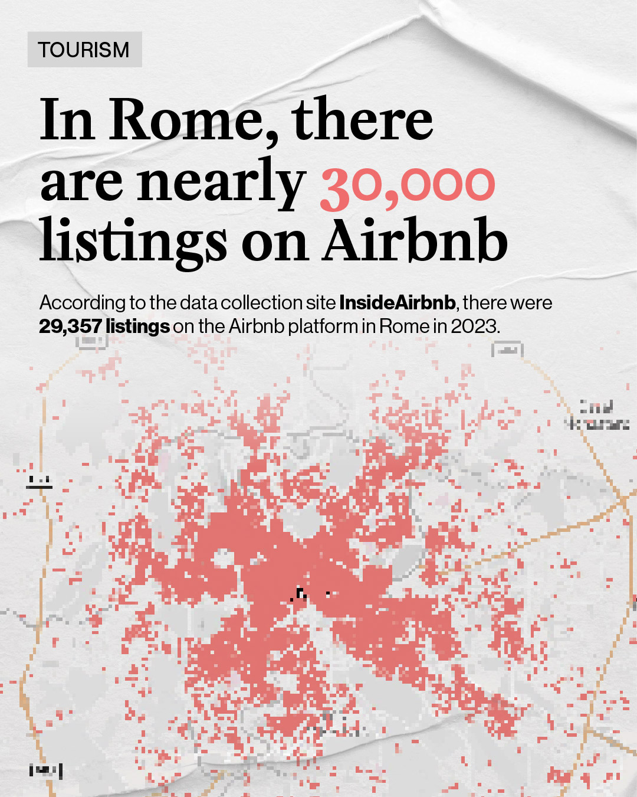
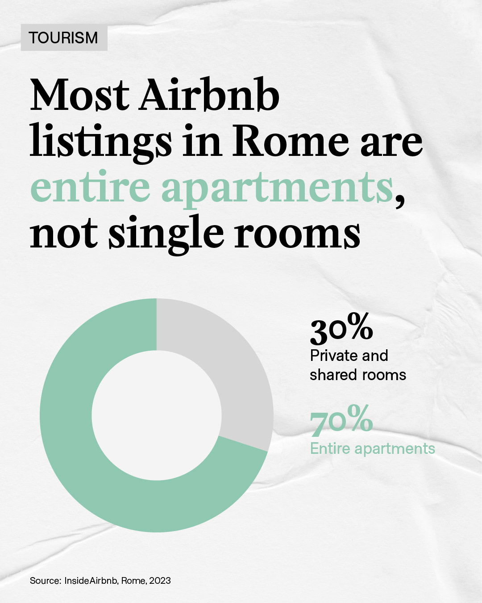
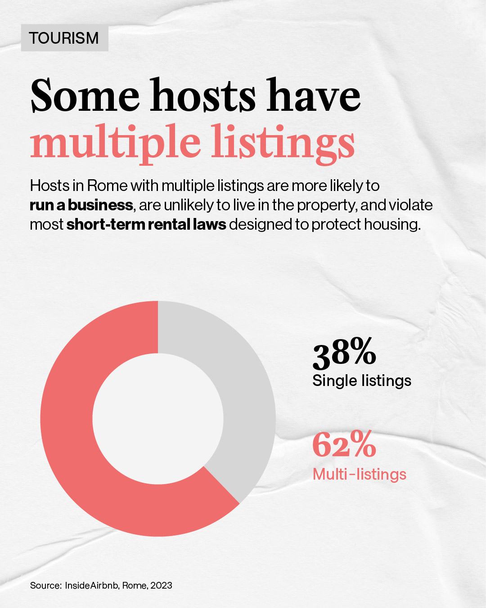
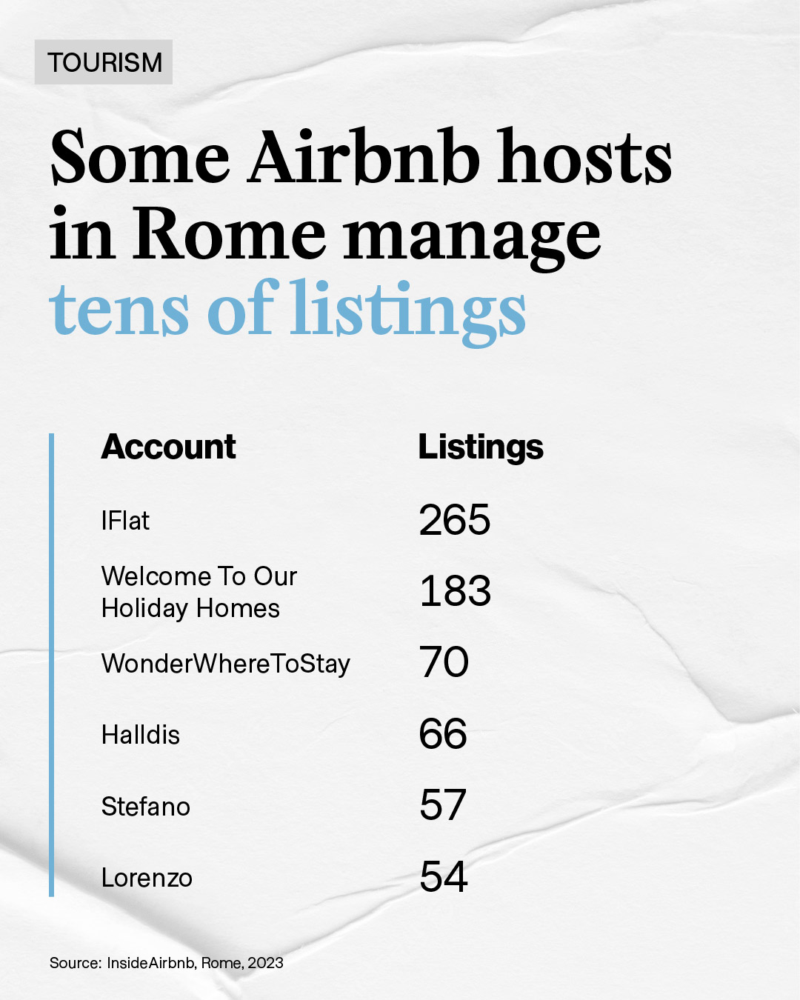

OVERTOURISM
Cities Without Citizens
This documentary explores the impact of the tourism industry on Italian cities. Through interviews with researchers, activists, workers, and residents, the project aims to provide an overview of the contradictions of tourism and offer new parameters of success for a sustainable industry.


WATCH THE DOCUMENTARY
CHAPTER 1
Sold out: sacrificing cities for tourism
The first chapter recounts the risks of excessive tourism, the experiences of activists in Venice, and the difficulties of using tourism revenues to foster urban livability.
CHAPTER 2
The Airbnb alternative
The second chapter explores the impact of short-term rentals on housing supply in Naples, Airbnb's legal battle to regulations, and the potential for platform accountability.
CHAPTR 3
'Unesco-cide': cities or museums?
The third chapter delves into the concept of "museification" and the ways in which the World Heritage label influences the development of towns like San Gimignano, contributing to their depopulation.
ABOUT
An investigation into the phenomenon of dysneyfication, or the transformation of historic cities into playgrounds for tourists.
Over the past decade, many cities have undergone profound transformations related to tourism, driving out less affluent residents from their centers. This phenomenon, accelerated by platforms like Airbnb, erodes the very characteristics that make tourist destinations attractive.
Can tourism, then, be considered a resource, "the oil of Italy"? And if so, for whom? Cities Without Citizens tackles these questions to envision a form of tourism that is sustainable for the local population, without disrupting the places where we spend our vacations.
Can tourism, then, be considered a resource, "the oil of Italy"? And if so, for whom? Cities Without Citizens tackles these questions to envision a form of tourism that is sustainable for the local population, without disrupting the places where we spend our vacations.
EXPERTS
Meet the authors, journalists and activists who participated in the project.
RESEARCH
Explore the research on which the project is based.
SARAH GAINSFORTH
Airbnb città merce
L'ultimo libro di Mckenzie Wark (NERO Editions) è assieme racconto della scena trans/rave di New York e illuminante analisi teorica.
SARAH GAINSFORTH
Airbnb città merce
L'ultimo libro di Mckenzie Wark (NERO Editions) è assieme racconto della scena trans/rave di New York e illuminante analisi teorica.
Touristification
Short-term rentals
Housing rights
Gentrification
Urban planning
Privatization
Urban resistance
Touristification


Short-term rentals
Housing rights
Museumification
Urban planning

Privatization

Colonial tourism

Environmental impact

Sustainable tourism

Touristification
Housing rights
Gentrification
Short-term rentals




Touristification
Short-term rentals
Housing rights
Tourism workers
Gentrification
Museumification
Urban decorum
Privatization
Urban resistance
SCREENINGS
Are you a cinema, organization, association or private individual and want to screen Cities Without Citizens in your city?
WRITE US AN E-MAIL


TEAM
Director: Ivan Rulyov
DOP: Edoardo Bellino
Voiceover supervisor: Matteo Vajani
Camera: Claudio Stammelluti, Marco Cuccio
Director of production: Flavia Accardi
DOP: Edoardo Bellino
Voiceover supervisor: Matteo Vajani
Camera: Claudio Stammelluti, Marco Cuccio
Director of production: Flavia Accardi
Cities Without Citizens